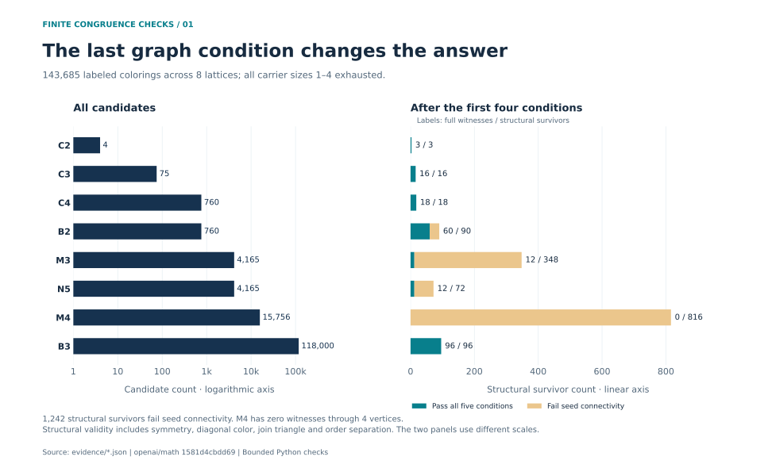
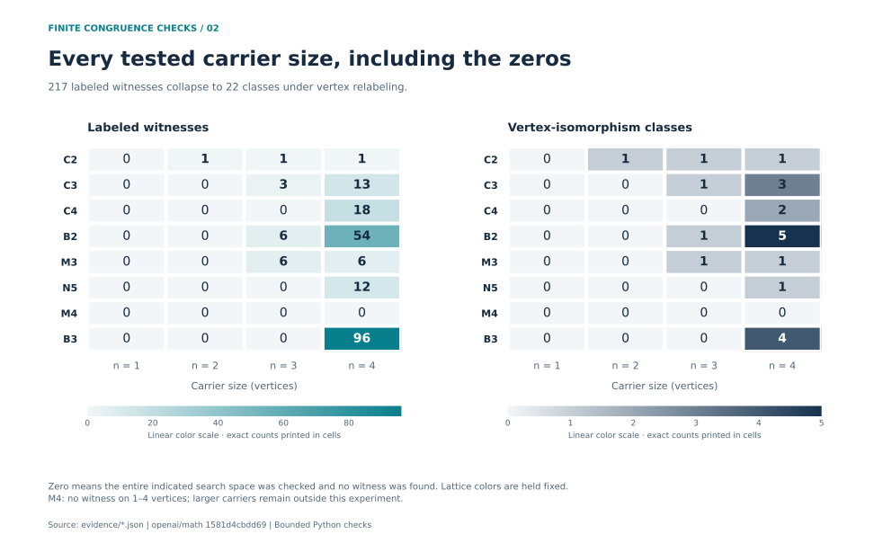
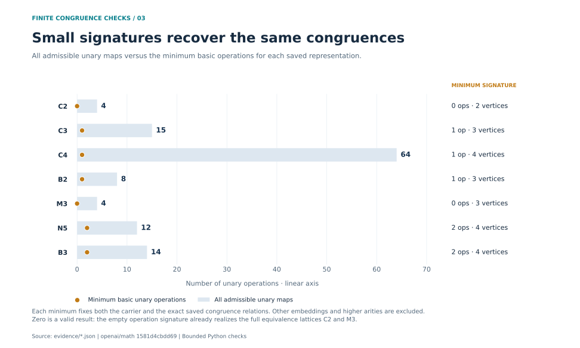
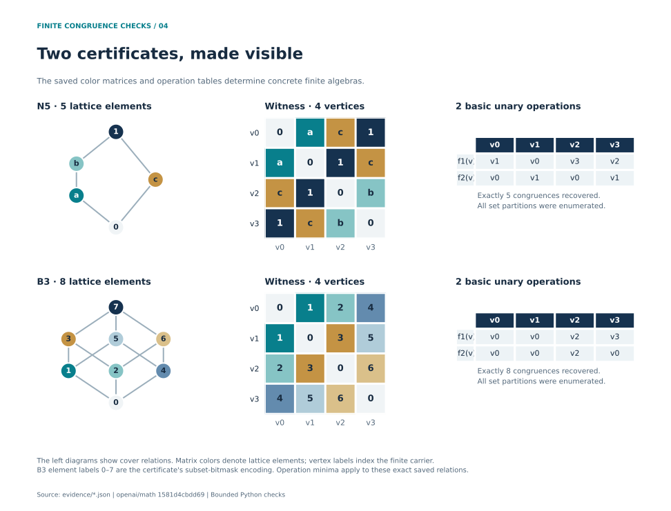

01 / SEARCH
Where the graph conditions matter
The first four conditions leave a much larger set than the complete criterion. The final condition checks whether admissible maps generate the required connections.

02 / COVERAGE
An explicit result for every tested size
The search covers the full bounded space. Exact cell values make both the positive examples and the negative results inspectable.

03 / CONSTRUCTIONS
How few operations are enough?
For each saved representation, the minimizer finds the smallest subset of unary operations whose congruences are exactly the saved target relations.

04 / CERTIFICATES
Read two examples directly
N5 and B3 connect the abstract lattice, a small color matrix and explicit operation tables. A separate partition enumeration recovers the target congruence lattice.

05 / EXACT DATA
The numbers behind the figures
| Lattice | Elements | Candidates | Structural | Witnesses | Classes | Min. carrier |
|---|---|---|---|---|---|---|
| C2 | 2 | 4 | 3 | 3 | 3 | 2 |
| C3 | 3 | 75 | 16 | 16 | 4 | 3 |
| C4 | 4 | 760 | 18 | 18 | 2 | 4 |
| B2 | 4 | 760 | 90 | 60 | 6 | 3 |
| M3 | 5 | 4,165 | 348 | 12 | 2 | 3 |
| N5 | 5 | 4,165 | 72 | 12 | 1 | 4 |
| M4 | 6 | 15,756 | 816 | 0 | 0 | None ≤ 4 |
| B3 | 8 | 118,000 | 96 | 96 | 4 | 4 |
Every zero in the detailed table is a measured outcome. M4's “None ≤ 4” is a bounded absence result.
Expand every lattice × carrier-size result
| Lattice | Vertices | Candidates | Structural | Witnesses | Classes |
|---|---|---|---|---|---|
| C2 | 1 | 1 | 0 | 0 | 0 |
| C2 | 2 | 1 | 1 | 1 | 1 |
| C2 | 3 | 1 | 1 | 1 | 1 |
| C2 | 4 | 1 | 1 | 1 | 1 |
| C3 | 1 | 1 | 0 | 0 | 0 |
| C3 | 2 | 2 | 0 | 0 | 0 |
| C3 | 3 | 8 | 3 | 3 | 1 |
| C3 | 4 | 64 | 13 | 13 | 3 |
| C4 | 1 | 1 | 0 | 0 | 0 |
| C4 | 2 | 3 | 0 | 0 | 0 |
| C4 | 3 | 27 | 0 | 0 | 0 |
| C4 | 4 | 729 | 18 | 18 | 2 |
| B2 | 1 | 1 | 0 | 0 | 0 |
| B2 | 2 | 3 | 0 | 0 | 0 |
| B2 | 3 | 27 | 6 | 6 | 1 |
| B2 | 4 | 729 | 84 | 54 | 5 |
| M3 | 1 | 1 | 0 | 0 | 0 |
| M3 | 2 | 4 | 0 | 0 | 0 |
| M3 | 3 | 64 | 6 | 6 | 1 |
| M3 | 4 | 4,096 | 342 | 6 | 1 |
| N5 | 1 | 1 | 0 | 0 | 0 |
| N5 | 2 | 4 | 0 | 0 | 0 |
| N5 | 3 | 64 | 0 | 0 | 0 |
| N5 | 4 | 4,096 | 72 | 12 | 1 |
| M4 | 1 | 1 | 0 | 0 | 0 |
| M4 | 2 | 5 | 0 | 0 | 0 |
| M4 | 3 | 125 | 0 | 0 | 0 |
| M4 | 4 | 15,625 | 816 | 0 | 0 |
| B3 | 1 | 1 | 0 | 0 | 0 |
| B3 | 2 | 7 | 0 | 0 | 0 |
| B3 | 3 | 343 | 0 | 0 | 0 |
| B3 | 4 | 117,649 | 96 | 96 | 4 |
Expand exact operation and congruence counts
| Lattice | Vertices | All admissible | Min. basic ops | Congruences |
|---|---|---|---|---|
| C2 | 2 | 4 | 0 | 2 |
| C3 | 3 | 15 | 1 | 3 |
| C4 | 4 | 64 | 1 | 4 |
| B2 | 3 | 8 | 1 | 4 |
| M3 | 3 | 4 | 0 | 5 |
| N5 | 4 | 12 | 2 | 5 |
| B3 | 4 | 14 | 2 | 8 |
06 / PROVENANCE
Trace every figure to a record
Upstream comparator: FiniteCongruenceGraph.lean
Commit: 1581d4cbdd69a0faf34b2089614fe2a814316a6a
Each build reconciles candidate counts, rejection totals, independent replay results, certificate hashes and operation counts before rendering. All chart quantities come from the recorded JSON inputs. The gallery loads locally without scripts, CDNs or network requests.
Repository guide · Method · Internal independent review · Research context
Input files and SHA-256 digests used for this build
- evidence/B2-witness.json
6f37a835112a5ea5c1be9f6ee5793ad8fe031139b0c0b493b077b3b0deaac221 - evidence/B3-witness.json
82c34bc3eba493827249de64f1c1ef6b1d719e5c568fa030ab138769a1cc6c9d - evidence/C2-witness.json
92444e62d4fecdef2eaf5c165746867cb366945466236fe3f676f8b28735e9c8 - evidence/C3-witness.json
1d2f6869dbaeb8262a68188319f4b07690f7338c78750e92f53d37342c2890a8 - evidence/C4-witness.json
410b2327417eb6538c0c05a153ab3fb810ca413fad1a4b51115be13476f41503 - evidence/M3-witness.json
d9fe6733f6f3c73a1a3c5d8577fc79d5d981d4fe4c407fbb753fc6ebf0f33db8 - evidence/N5-witness.json
2b6648c6842bf0742c3029c6c0ad7c906fbdb8d281d8e830a85c51c047ef2685 - evidence/independent-review-results.json
08244799b4bdd773c7cd4ce24ab294c3540ced8fee920dd1a736a2e3d329fe04 - evidence/minimized-algebras.json
76671ae20ad76bc2507b9e0c822bb78862abf2ff507f1a3ab7ba8b40efe85cea - evidence/search-results.json
d25ee157a0be410cd681f02b6792ecada5a2564b76cc01daf4e274fadf818472 - evidence/verified-algebras.json
5fcdbfee2dde1ee573b696be37b7c2324aa5e80b717c52bb4286c80c24088566